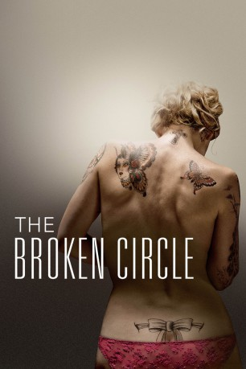
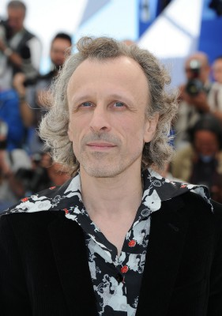

#1660 The Broken Circle
Auszeichnungen: für 1 Oscars nominiert
 
 IMDB-Wertung: 7.8 / 10
IMDB-Wertung: 7.8 / 10  Metascore: 70
Metascore: 70 
Didier spielt Banjo in einer Blue-Grass Band und lebt in einem Wohnwagen auf dem Gelände eines alten Bauernhofes, der ihm gehört und den er sanieren will. Als er Elise begegnet, die in einem Tattoo-Studio arbeitet, und selbst viele Tattoos am Körper hat, ist es Liebe auf den ersten Blick. Sie teilt bald seine Vorliebe für die Musik und beginnt, gemeinsam mit ihm auf der Bühne zu singen. Sie sind sehr glücklich, aber als sie plötzlich schwanger wird, reagiert er einen Moment lang verstört, überfordert davon, sich für ein Leben entscheiden zu müssen. Um kurz danach wieder mit Baumaterial aufzutauchen, um das Haus zu sanieren, denn dem Baby will er kein Leben in einem Wohnwagen zumuten. Als Maybelle geboren wird, ist der Kreis des Glücks geschlossen, beginnt ein Leben zwischen Musik, dem Bauernhof, Freunden und Familie, aber dann erkrankt die kleine Tochter mit 6 Jahren an Krebs...
Jahr: 2012
Dauer: 111 Minuten
FSK: 12
Land: Belgien Studio: Pandora Film VerleihTonspuren: DD5.1 - ,
Untertitel: Deutsch,
Auflösung: 1080p (1920x804) Größe: 7075 MB
Genre: Drama, Musik, Liebe
Regisseur: Felix van Groeningen
Drehbuch: Johan Heldenbergh, Mieke Dobbels, Carl Joos, Felix van Groeningen, Charlotte Vandermeersch
Soundtrack: Bjorn Eriksson
Darsteller:
- Veerle Baetens als Elise / Alabama
-  Jan Bijvoet als Koen
 George W. Bush als Himself , archive footage
George W. Bush als Himself , archive footage- Emilie Guillaume als
 Johan Heldenbergh als Didier / Monroe
Johan Heldenbergh als Didier / Monroe- Nell Cattrysse als Maybelle
- Geert Van Rampelberg als William
- Nils De Caster als Jock
- Robbie Cleiren als Jimmy
- Bert Huysentruyt als Jef
- Sofie Sente als
- Ruth Beeckmans als
- Jan Hammenecker als Doctor
- Blanka Heirman als Denise
- Kirsten Pieters als
- Yves Degryse als
- Dominique Van Malder als
- Marianne Loots als
- Sanderijn Helsen als
- Siham El Makhfi als
- Maxime Neyt als
- Maurice Leerman als
- Aagje Moorthamer als
- Lena Cattrysse als
- Warre Cattrysse als
- Eva Vanrysselberghe als
- Labhise Allara Mandango Ciratu als
- Mieke Proost als
- Yasmina Neyskens als
- Bjorn Eriksson als
- Karl Eriksson als
- Lennart Dauphin als
- Celine Vande Vyver als
- Karel Vandaele als
- Isabelle Persoons als
- Jo Lootens als
- Arthur de Hond als Dog
Datei: X:\2012(A-F)\Broken Circle, The (2012, FSK12, 1920x804).mkv seit 31.07.2015
Festplatte: HD 2012(A-M)
 Es gibt insgesamt 102 Filme in der Gruppe '2012(A-F)'
Es gibt insgesamt 102 Filme in der Gruppe '2012(A-F)'